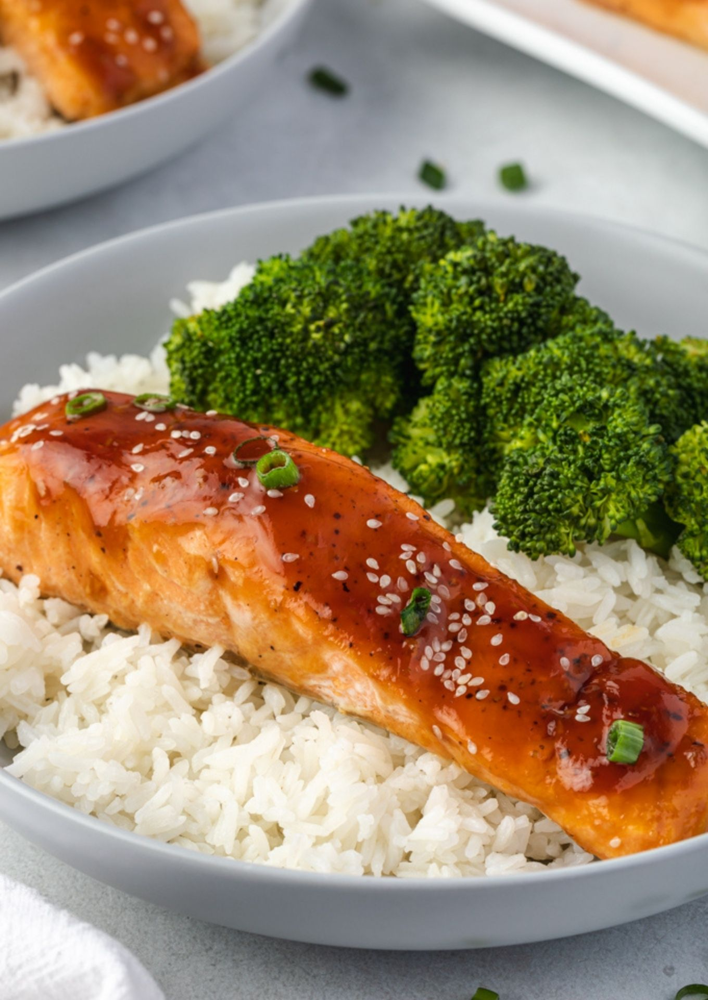

Teriyaki Salmon

Description
This recipe makes an amazing umami Teriyaki Salmon with baked broccoli and potatoes.
Ingredients
- Salmon Filets (De-skin & De-Bone)
- Fresh Ginger (1/3 Cup)
- Teriyaki Sauce or Soy Sauce with 1/4 Cup Sugar (.5 - 1 Cup)
- Rosemary (optional)
- Thyme (optional)
- Lemongrass (optional)
- Spring/Green Onion (optional)
- Black Pepper
- Salt
- Fresh Garlic (8 Cloves)
- White Wine (.5 Cup)
- Olive Oil
Procedure
Marinade
COMPILE MARINADE 2-8 HOURS BEFORE THE MEAL
- De-bone and de-skin salmon if needed.
- Grate Garlic until minced.
- Roughly Dice Ginger, doesn't need to be incredibly small.
- To a 1 Gal Ziploc Bag, add garlic, salt, pepper, and any optional ingredients from the ingredients list.
- Place salmon inside the ziploc bag and fill with teriyaki sauce until the salmon is barely immersed.
- Refrigerate and let marinate such that salmon is immersed in the mixture for 2-8 hours.
The Cook
- Cover the bottom of a pan with olive oil and warm it over med-high heat
- Place the fish in the hot pan (facing away from you to avoid splashing) and lay a couple spoonfuls of the marinade onto the salmon.
- Cover with lid and sear for 2 minutes. Remove the lid and sear for 2+ minutes or until the salmon sides have browning.
- Flip Salmon Filets and cook for 2+ minutes. Desired doneness is when the fish is just barely browned out along all sides.
- Enjoy!!